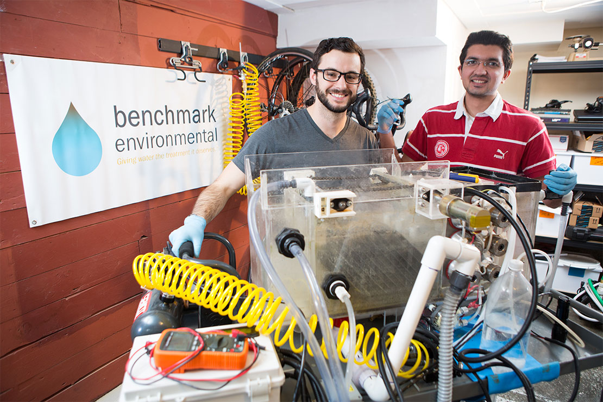
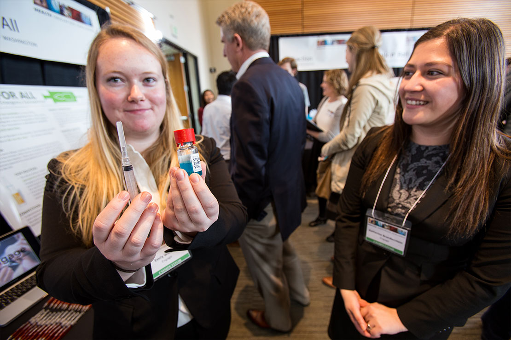

$170K awarded to Jones+Foster Accelerator teams
Since 2010, the Jones + Foster Accelerator has been providing early stage ventures with a six-month runway to accelerated growth. By connecting teams with powerful mentorship and measurable milestones, they quickly move toward accomplishing their startup goals.

Student teams create unique solutions for inaugural Health Innovation Challenge
The long-awaited Health Innovation Challenge has finally hit the University of Washington campus! Launched on March 3, 2016, the Health Innovation Challenge plays off of the best aspects of the University of Washington and Seattle entrepreneurial communities.